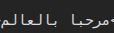

Latin
DejaVuSans: test
DejaVuSans Bold: test
DejaVuSans with generic fallback: test
DejaVuSans Bold with generic fallback: test
Generic sans-serif: test
Missing font (should fall back to generic): test
Emojis
DejaVuSans: ❤️✅✨😭🔥👀🥹
DejaVuSans Bold: ❤️✅✨😭🔥👀🥹
DejaVuSans with generic fallback: ❤️✅✨😭🔥👀🥹
DejaVuSans Bold with generic fallback: ❤️✅✨😭🔥👀🥹
Generic sans-serif: ❤️✅✨😭🔥👀🥹
Missing font (should fall back to generic): ❤️✅✨😭🔥👀🥹
Symbols
DejaVuSans: ⌧⌘⏻∀↗ⅻΩ₱※┭▩☙✘
DejaVuSans Bold: ⌧⌘⏻∀↗ⅻΩ₱※┭▩☙✘
DejaVuSans with generic fallback: ⌧⌘⏻∀↗ⅻΩ₱※┭▩☙✘
DejaVuSans Bold with generic fallback: ⌧⌘⏻∀↗ⅻΩ₱※┭▩☙✘
Generic sans-serif: ⌧⌘⏻∀↗ⅻΩ₱※┭▩☙✘
Missing font (should fall back to generic): ⌧⌘⏻∀↗ⅻΩ₱※┭▩☙✘
CJK
DejaVuSans: 维基百科 ウィキペディアへようこそ 위키백과
DejaVuSans Bold: 维基百科 ウィキペディアへようこそ 위키백과
DejaVuSans with generic fallback: 维基百科 ウィキペディアへようこそ 위키백과
DejaVuSans Bold with generic fallback: 维基百科 ウィキペディアへようこそ 위키백과
Generic sans-serif: 维基百科 ウィキペディアへようこそ 위키백과
Missing font (should fall back to generic): 维基百科 ウィキペディアへようこそ 위키백과
RTL scripts
DejaVuSans: مرحبا بالعالم
DejaVuSans Bold: مرحبا بالعالم
DejaVuSans with generic fallback: مرحبا بالعالم
DejaVuSans Bold with generic fallback: مرحبا بالعالم
Generic sans-serif: مرحبا بالعالم
Missing font (should fall back to generic): مرحبا بالعالم
Not working yet! The letters are set left-to-right instead of right-to-left. Should look like this:

Georgian
DejaVuSans: ყოველი ადამიანი იბადება თავისუფალი და თანასწორი თავისი
DejaVuSans Bold: ყოველი ადამიანი იბადება თავისუფალი და თანასწორი თავისი
DejaVuSans with generic fallback: ყოველი ადამიანი იბადება თავისუფალი და თანასწორი თავისი
DejaVuSans Bold with generic fallback: ყოველი ადამიანი იბადება თავისუფალი და თანასწორი თავისი
Generic sans-serif: ყოველი ადამიანი იბადება თავისუფალი და თანასწორი თავისი
Missing font (should fall back to generic): ყოველი ადამიანი იბადება თავისუფალი და თანასწორი თავისი